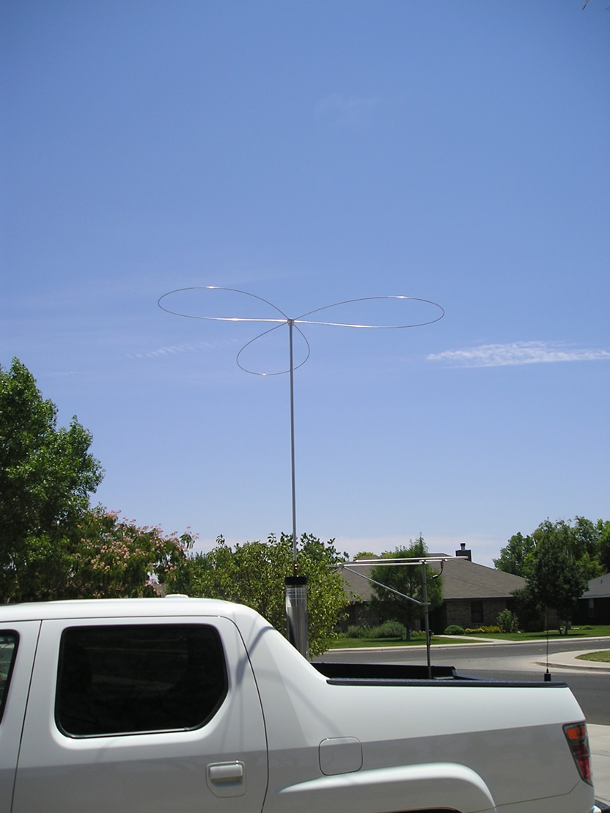

Last Modified: January 23, 2012
Contents: Basics; Don Wallace, W6AM; Don Johnson, W6AAQ; John Kraus, W8JK; Parker Gates, W9DZT; Alan Caplan, WØRIC; Morningside Net; Amateur Radio News; The Ubiquitous Mobile Antenna; The Very First Antenna Shootout; Funny In Retrospect; Crime Doesn't Pay; Lightning Can Strike!; High Power Mobile; On A Serious Note;
Ron Douglass, NI7J, owner of Scorpion Antennas (and someday owner of this site), has ask me several times to do a yesteryear article covering some of my experiences, and specifically those which relate directly to the subject at hand, mobile operation. I've been reluctant to do so, as I'm just not one to brag no matter how significant the story might be. Sainte-Beuve said it best; The style is the man. So please, don't take what is here as a personal aggrandizement. The truth is, each and everyone of us has a story to tell, and mine are not unique in any respect. I hope you enjoy.
 One of my mobile hero's was Don Wallace, W6AM, (sk), (pictured left from an old photo). I had the honor of meeting Don in persona (pun intended) on several occasions. He was a first-class gentleman, contester, DX chaser, CW artiste extraordinaire (40+ wpm), and of course a mobile operator. As far as I know, Don still holds the record for the most DXCC contacts while operating mobile (I'm close, but no cigar). I told him once, that I wasn't going to kick the bucket until I had worked as many DX entities as he had. He laughed, and wished me well.
One of my mobile hero's was Don Wallace, W6AM, (sk), (pictured left from an old photo). I had the honor of meeting Don in persona (pun intended) on several occasions. He was a first-class gentleman, contester, DX chaser, CW artiste extraordinaire (40+ wpm), and of course a mobile operator. As far as I know, Don still holds the record for the most DXCC contacts while operating mobile (I'm close, but no cigar). I told him once, that I wasn't going to kick the bucket until I had worked as many DX entities as he had. He laughed, and wished me well.
He did have a secret or two, however. Don lived on what is now called Wallace Ranch, in Palos Verdes Estates, California. It was an old Naval, WWII radio site, replete with some 11 (some references say 18) rhombic antennas. That fact sure helped his DXCC score! When he really needed a DXCC entry in his mobile log, he often set up a schedule with a DX station so he could work them from his mobile, usually from his driveway about 10 minutes later!
The other part of the secret was his almost legendary fist! I only worked Don one time on CW, and that was from his home, not his mobile. As I recall, I had to ask him several times to QRS!
It didn't hurt that he ran high power! The amplifier doesn't show in the photo, but when I first met him, he was using a modified Swan 1200x amp. I don't recall what the power supply configuration was. The antenna was a center loaded monobander. Whether it used a Master Mobile, or a Bassett coil, is perhaps moot.
The photo shows Don behind the wheel (I'm not sure that is the Cadillac he owned when I first met him), with a Swan 400 in the front seat. It's difficult to tell what the other items are, but one of them is certainly an external VFO for working splits. How he managed to operate splits while underway is a mystery.
If you want to learn more about Don, do a simple Google search for W6AM, you'll find more than you probably wanted to know about the man, and his accomplishments.
There is another Don who was very instrumental in mobile operation, at least modern-day, and that is Don Johnson, W6AAQ (sk), although I never met him in person. In 1991, he developed what we all know as the screwdriver antenna. A lot has been written about the antenna, but few know why it is (was) called a screwdriver.
 The coil assembly of a screwdriver antennas, just fits inside the lower antenna portion, commonly called a mast. At the top of the mast, is a contact assembly typically made of beryllium copper. As the coil is raised and lowered, more or less of the coil is used, thus resonating the antenna on a specific frequency. The coil assembly is moved up and down, on a long piece of threaded rod stock, typically 1/4x20. A motor at the base of the antenna turns the threaded rod. The motor in Don's case was a modified Black & Decker, rechargeable screwdriver, hence, the name.
The coil assembly of a screwdriver antennas, just fits inside the lower antenna portion, commonly called a mast. At the top of the mast, is a contact assembly typically made of beryllium copper. As the coil is raised and lowered, more or less of the coil is used, thus resonating the antenna on a specific frequency. The coil assembly is moved up and down, on a long piece of threaded rod stock, typically 1/4x20. A motor at the base of the antenna turns the threaded rod. The motor in Don's case was a modified Black & Decker, rechargeable screwdriver, hence, the name.
Part of the theory behind the design, was an attempt at reducing coil Q losses caused by short-tapping, heretofore used to resonant a given coil on a higher band than it nominally was resonant on. In other words, no shorted turns, no reduction is Q. The truth is, the unused portion of the coil was indeed short tapped by the capacitance between the coil, and the mast it was housed in. The real advantage was the fact that the antenna did not have Q-reducing, large end-caps most mobile antennas of the day sported. If the screwdriver antenna as designed by Don had no other attribute, it was the fact it could be retuned while in motion! Hallelujah! Or maybe, Kowabonga!
The photo at right (taken by Ron Douglass, NI7J) was another attempt to automate the mobile experience. If you enlarge the photo, you'll notice all of the electronics within the antenna. Whether this all worked in the presents of RF is moot. After all, we all started at the bottom. There are more photos of Don in the Photo Gallery's Old Time Radio album.
 One of the amateurs I met on the air, after I found out I was being transferred to Denver (1973), was Roden J. Rodgers, WØNNI (sk). In some respects, Rog, as he was known, was almost a father to me in many respects, even referring to me as his number three son. Roderick Isler, WAØPIE, a retired member of the Joint Chiefs of Staff, was his so-called number two son; heady company indeed. He introduced me to other members of his Morningside Net (see below), including Dr. John Kraus, W8JK (sk). At the time, I knew that John was a professor at Ohio State University, in Columbus, but didn't know he was the head of the Electrical Engineering & Astronomy department! In 1974, John came to Denver, for a conference at the University of Colorado in Boulder. He stayed at Rog's house, and I was invited to dinner. What an enjoyable meeting. I suspect I learned more about antennas from that meeting, and subsequent on-air discussions, than I would ever have otherwise. I even have a signed copy of his Antennas For All Applications.
One of the amateurs I met on the air, after I found out I was being transferred to Denver (1973), was Roden J. Rodgers, WØNNI (sk). In some respects, Rog, as he was known, was almost a father to me in many respects, even referring to me as his number three son. Roderick Isler, WAØPIE, a retired member of the Joint Chiefs of Staff, was his so-called number two son; heady company indeed. He introduced me to other members of his Morningside Net (see below), including Dr. John Kraus, W8JK (sk). At the time, I knew that John was a professor at Ohio State University, in Columbus, but didn't know he was the head of the Electrical Engineering & Astronomy department! In 1974, John came to Denver, for a conference at the University of Colorado in Boulder. He stayed at Rog's house, and I was invited to dinner. What an enjoyable meeting. I suspect I learned more about antennas from that meeting, and subsequent on-air discussions, than I would ever have otherwise. I even have a signed copy of his Antennas For All Applications.
The one attribute John had above all others, was his zest for learning, and one which rubbed-off on everyone who knew him, me included! Fact is, I suspect he was the catalyst for more Phds, than anyone I ever knew. Here is the Wikipedia information on John. You might want to read about his Big Ear project too.
 If you're over 65, and you haven't heard of Gates Radio and Supply Company, you've been living under a rock. Almost as famous is its founder Parker Gates, W9DZT (sk). He was very good friends with Lee Bergrin, WØAR (sk), of Loudenboomer fame. While I lived in the Kansas City, area, I quite often checked into the morning Kansas City net. Parker was often a check in. In the spring of 1974, on a trip to the tri-cities, I took a small detour to Quincy, IL where Parker lived.
If you're over 65, and you haven't heard of Gates Radio and Supply Company, you've been living under a rock. Almost as famous is its founder Parker Gates, W9DZT (sk). He was very good friends with Lee Bergrin, WØAR (sk), of Loudenboomer fame. While I lived in the Kansas City, area, I quite often checked into the morning Kansas City net. Parker was often a check in. In the spring of 1974, on a trip to the tri-cities, I took a small detour to Quincy, IL where Parker lived.
We had a very enjoyable talk about old-time radio, and the founding of Gates radio. Besides transmitters, they also produced studio equipment. I don't remember the whole story, but I do remember one model was named after his mother, Cora. The next afternoon, we went out to lunch at the local country club, with his extended family of three daughters, wife, and a whole parcel of grandchildren. This brings up a very strange scenario.
During one of the conversations with Parker, he mentioned that his life in the broadcast industry was the reason he only had daughters. He was convinced, apparently, that the low, and medium frequency radiation caused the phenomena. I have always been told that wasn't the case, but over the years I have met several other amateur operators who have also been in the broadcasting industry with the same story to tell. It would be hard to prove the case, but it is the main reason I remember Parker so well.
 From February 1976 until late 1979, I worked for John Capone, WAØADV, who owned CW Electronics in Denver, Colorado. That's me on the left, John on the right, and office manager Debbie, in the center. These so called machinegun ads appeared in all of the major amateur magazine of the time. It would stand to reason then, that I would know Alan B. Caplan, WØRIC, Sales Manager of Hy-Gain Electronics. But, there is more to the story.
From February 1976 until late 1979, I worked for John Capone, WAØADV, who owned CW Electronics in Denver, Colorado. That's me on the left, John on the right, and office manager Debbie, in the center. These so called machinegun ads appeared in all of the major amateur magazine of the time. It would stand to reason then, that I would know Alan B. Caplan, WØRIC, Sales Manager of Hy-Gain Electronics. But, there is more to the story.
One morning in 1977, John was excited to have me meet the National Sales & Service Manager of Hy-Gain Electronics, and when they walked through the ham shack door, Cappy, as he was known to his friends, called me by my nickname (you'll have to guess what it is), much to the chagrin of John Capone. How could I possibly know this guy? Alas, I digress.
I literally grew up in a sporting goods story in Kansas City, MO. If there was a place to dip a pole, or pull a trigger, I've probably been there, and done that! I used to get out of school twice a year for a week, to attend the fall opening of elk season in Colorado, and in the spring for the opening of trout fishing in Missouri—Bennett Springs as a rule. Christmas break was always spent pheasant hunting in western Kansas, and southern Nebraska. I didn't always go north to Nebraska because their season typically opened before the break. In any case, that's how I met Alan Caplan. He wasn't the only pheasant hunter at Hy-Gain, but I don't remember the others. After all, ≈35 years is a long time ago!
During the early 70s, I worked for a wire rope company, and quite often traveled to Lincoln. If I had the time I would stop by and see Cappy. During one of those visits, I got a grand tour of Hy-Gain's antenna test range. The University of Nebraska's field house now sits on that site. As far as I know, it was the last of the privately-owned, large-scale antenna test sites in the U.S. I don't remember the name of the engineer who explained the workings, but in any case it gave me a perspective of the complexity of measuring real-world performance of HF antennas, including mobile ones.
I have recently been told, that all of Hy-Gain's test data is now archived by the university. However, I have been unable to confirm this. In any case, it would certainly be an interesting exercise to plow through it, and compare the real-world test results against those of modern-day modeling programs.
The current holder of WØRIC, is Eric Spiegel, better known as Ric. Oddly enough, I count him among my friends.

 I moved to Denver, Colorado in August of 1973. A few weeks before the move, I was fortunate enough to meet Roden J. Rogers, WØNNI (sk). Rog, as he was known (shown at left in July 1980) founded the Morningside Net. Rog lived on Morningside drive in west Denver, hence the name, and it met on 14.255 MHz, at 8PM, and 5PM.
I moved to Denver, Colorado in August of 1973. A few weeks before the move, I was fortunate enough to meet Roden J. Rogers, WØNNI (sk). Rog, as he was known (shown at left in July 1980) founded the Morningside Net. Rog lived on Morningside drive in west Denver, hence the name, and it met on 14.255 MHz, at 8PM, and 5PM.
The group photo (shown at right) was taken in Scottsdale, Arizona, in May 1990. I wasn't at this specific annual meeting, but had attended several times before, and many after. Time does fly, and with just three exceptions, everyone in this photograph is now a silent key. Rog for example, passed away May 01, 1984.
At one time, there were over 50 members, and on any given day, 10 to as many as 30 would be on the air in the AM or PM, and most of the time, both! The last original member besides myself, was Jay Rainey, K7WYC (sk), and he is in the last row, fourth from the left. Jay passed away in January of 2011.
The Morningside net is gone along with most of its members, and I miss them all. It may sound like I'm waxing poetic, but what I miss the most, was the fellowship—it was indeed the acme of perfection. Everyone was courteous, and curious about everyone else in the group. If someone got sick, flowers were always sent. You never heard a swearword out of any of them. You didn't hear any QSL or Roger That either. Most everyone used VOX, and knew how to use it. Turnarounds were fast, and most eavesdroppers would think they were listening to a coffee klatch, because they were! Best of all, there wasn't one over modulated, super compressed, or lousy-sounding signal among them. They were a classy bunch, and I'm proud to say I was one of them.

 I first got interested in amateur radio when I was 8 or 9 years old, when I received a crystal set kit for Christmas, from my brother Rodney. One of the other influences, was Radio Amateur News. It is almost unheard of today, but the magazine was published from 1919 until 1971. It went through several name chances, and over the years. The original published was Hugo Gernsback, and the two color cover art was by the as famous, Howard Brown. Hugo died in 1967.
I first got interested in amateur radio when I was 8 or 9 years old, when I received a crystal set kit for Christmas, from my brother Rodney. One of the other influences, was Radio Amateur News. It is almost unheard of today, but the magazine was published from 1919 until 1971. It went through several name chances, and over the years. The original published was Hugo Gernsback, and the two color cover art was by the as famous, Howard Brown. Hugo died in 1967.
My father was interested in amateur radio too, but never took the next step. He graduated from KU in 1922, with an Industrial Engineering degree. Some of his early reading was Radio Amateur News. Although his issues of the magazine are long-lost, I did manage to find good-quality reproductions on the aforementioned web site.
As you can see from the cover art at left, mobile operation was apparently possible way back in 1919. But it wasn't that issue that got me turned on. It was the one on the right. My father's copy of the magazine was already dog-eared, but I can't tell you how many times I read that issue over, and over.
A lot of other yesteryear amateurs cut their teeth on the magazine, and others published, or written by Hugo Gernsback, including a myriad of science fiction. In fact, the Sci-fi writers award, The Hugo, is named after him. You might want to read what Wikipedia has to say about him.
 One thing every mobile installation must have, is an antenna. Nowadays, there seems to be several schools of thought about HF mobile antennas. There are the A hamstick is as good as anything crowd; the short, stubby, no holes crowd; and the all out crowd. I'm proud to be in the latter category, as were most of our forefathers. One contributing factor was the output power most mobile radios had at the time. As hard as it is to believe, until about the late 60s, 100 watts PEP output mobile was almost unheard of. Our forefathers also knew a lot more about antennas, than the majority of today's amateurs—a sad, but albeit true fact.
One thing every mobile installation must have, is an antenna. Nowadays, there seems to be several schools of thought about HF mobile antennas. There are the A hamstick is as good as anything crowd; the short, stubby, no holes crowd; and the all out crowd. I'm proud to be in the latter category, as were most of our forefathers. One contributing factor was the output power most mobile radios had at the time. As hard as it is to believe, until about the late 60s, 100 watts PEP output mobile was almost unheard of. Our forefathers also knew a lot more about antennas, than the majority of today's amateurs—a sad, but albeit true fact.
 With a few notable exceptions, all HF mobile antennas were monoband. Most were body mounted, with the no-holes crowd choosing bumper mounts (all vehicles used to have real, steel bumpers back then). The vast majority utilized a ballmount similar to the one shown. Bottom masts were often plated steel, aluminum, or even fiberglass with an embedded copper strip. Whips were almost always made of 17-7 stainless steel. But unlike today, lengths up to 120 inches could be purchased. There was at least one company selling so-called copper-plated ones, although they were actually three layered; nickel, copper, then chrome.
With a few notable exceptions, all HF mobile antennas were monoband. Most were body mounted, with the no-holes crowd choosing bumper mounts (all vehicles used to have real, steel bumpers back then). The vast majority utilized a ballmount similar to the one shown. Bottom masts were often plated steel, aluminum, or even fiberglass with an embedded copper strip. Whips were almost always made of 17-7 stainless steel. But unlike today, lengths up to 120 inches could be purchased. There was at least one company selling so-called copper-plated ones, although they were actually three layered; nickel, copper, then chrome.
 There were at least 10 HF mobile antenna manufacturers advertising in the pages of QST. Several of these were notable, not the least of which was Master Mobile. If you enlarge the ad, and look very carefully, you'll notice something special about their ballmount. Unlike the old GE Master ball shown at right, their ball was cut at a 60° angle, instead of 45° angle. This allowed the mount to be used on oblique-angled sheet metal. Of further note was their mobile matchers, one of which remotely controlled!
There were at least 10 HF mobile antenna manufacturers advertising in the pages of QST. Several of these were notable, not the least of which was Master Mobile. If you enlarge the ad, and look very carefully, you'll notice something special about their ballmount. Unlike the old GE Master ball shown at right, their ball was cut at a 60° angle, instead of 45° angle. This allowed the mount to be used on oblique-angled sheet metal. Of further note was their mobile matchers, one of which remotely controlled!
Digressing for just a moment. The Master Mobile Micor-Z-Matcher was actually an adjustable shunt matching coil. The Master Matcher worked in concert with the Micro-Z-Matcher. The motorized coil was in series with the input of the antenna. This allowed excursion from the resonant frequency the antenna was tuned to. In other words, it extended the bandwidth by several times, depending on the band in question. For example, on 80 meters the typical bandwidth of a Master Mobile antenna was about 15 kHz, but the Master Matcher could expand that to about 100 kHz. It also contained a so-called field strength meter, which in reality measured the RF voltage at the antenna's feed point. So were the times!
Also take note of the all band, manually adjustable coil. Although it is difficult to see in the photo, the all band coil had a very unique feature. The coil pitch on the top half of the coil, was half that of the base section. The idea was to maintain a higher Q on the upper bands by minimizing the inter-turn capacitance. How well it worked is perhaps moot, but the idea is more than novel.
Another noted manufacturer was Bassett. The writing on the ad is hard to read, even when expanded. Besides the vacuum headline, the fine print says they were filled with helium. You have to wonder how long it stayed around, as helium can escape easily, even through solid glass! Some amateurs reported that the coils glowed during transmission, but I find that difficult to believe.
 E. F. Johnson is better known for the transmitting and receiving gear, and not for their HF mobile antennas. Two stick out in my mind, and I have owned, and used both. The Bi-Net is a very interesting device. Housed within the tear-drop shaped housing is a 20 meter loading coil. Behind it is a series resonant trap which shorts out the loading coil, for operation on 10 meters. The capacitor is cleverly incorporated within the supporting structure.
E. F. Johnson is better known for the transmitting and receiving gear, and not for their HF mobile antennas. Two stick out in my mind, and I have owned, and used both. The Bi-Net is a very interesting device. Housed within the tear-drop shaped housing is a 20 meter loading coil. Behind it is a series resonant trap which shorts out the loading coil, for operation on 10 meters. The capacitor is cleverly incorporated within the supporting structure.
 I unfortunately do not have a photo of the Base Load. It was housed in a brown fiberglass housing, open at the bottom. Inside was a coil, and a multi position switch. You screwed the coil on to a ballmount, and screwed in a whip. Removable jumpers, connected to the switch selected the matching points. It was one of the first multiband antennas.
I unfortunately do not have a photo of the Base Load. It was housed in a brown fiberglass housing, open at the bottom. Inside was a coil, and a multi position switch. You screwed the coil on to a ballmount, and screwed in a whip. Removable jumpers, connected to the switch selected the matching points. It was one of the first multiband antennas.
 Probably the most famous multiband antenna, was the Webster Bandspanner. A cutaway of it is at right. The mast was fiberglass, with an embedded copper conductor. The whip has markings on its surface for resetting the frequency range. Similar to a screwdriver antenna, the overall length increased as you moved to the lower bands. You still see them in use from time to time, even though they haven't been made for some 40 years.
Probably the most famous multiband antenna, was the Webster Bandspanner. A cutaway of it is at right. The mast was fiberglass, with an embedded copper conductor. The whip has markings on its surface for resetting the frequency range. Similar to a screwdriver antenna, the overall length increased as you moved to the lower bands. You still see them in use from time to time, even though they haven't been made for some 40 years.
Vaaro was a frequent QST advertiser in the 50s. The ad at left shows their version of the multiband coil, although they made monoband ones too. I have never (at least knowingly) seen a Vaaro coil, or mount. That brand might have been what Don Wallace, W6AM (sk), used, but I can't say for sure. They were certainly located close to his home QTH.
No doubt the one thing which stands out about all of the older mobile antennas, and their accessories is the prices they sold for. Considering their marketing circa, they were as expensive, if not more so, than today's HF antenna gear. It is still amusing to think about the lowly hamstick. The first ones available sold for just $1.98!
 During the 50s, amateurs were a whole lot less reluctant to drill holes in their vehicles, even the roofs. The pictorial was from an article published in QST, in May, 1961. It was written by the owner, D. H. Gieskieng, K9CFE (sk). His call has since been reissued as a vanity. The article has detailed data on the design, building, and tuning. One rather interesting note was his comments about the antenna not detuning while underway, like most bumper mounted ones. While the detuning might not have been noticed, it was still present in any antenna with a flexible whip.
During the 50s, amateurs were a whole lot less reluctant to drill holes in their vehicles, even the roofs. The pictorial was from an article published in QST, in May, 1961. It was written by the owner, D. H. Gieskieng, K9CFE (sk). His call has since been reissued as a vanity. The article has detailed data on the design, building, and tuning. One rather interesting note was his comments about the antenna not detuning while underway, like most bumper mounted ones. While the detuning might not have been noticed, it was still present in any antenna with a flexible whip.
In this case, the assembly was mounted atop an Oldsmobile, which at the time was an expensive vehicle compared to say a Chevrolet. Yet, he drilled several holes right above the dome light. A gasket was used to keep the water out. Makes one wonder how many of today's amateur would go to the trouble he did.
The Very First Antenna Shootout
 As I point out in the Antenna Shootout article, amateurishly-conducted field strength comparisons are suspect at best. But that fact has never stopped amateurs from comparing one another's mobile antenna. More specifically, their complete mobile installations.
As I point out in the Antenna Shootout article, amateurishly-conducted field strength comparisons are suspect at best. But that fact has never stopped amateurs from comparing one another's mobile antenna. More specifically, their complete mobile installations.

The result of the third trial were published in the July 1961 issue of QST. Included with the article was a montage of 16 photos. Probably the most interesting fact was, almost without exception, each entrant's antenna sported a cap hat. One of those was nearly identical to the one I currently use shown at left. A scan of the actual QST page is shown at right (click to enlarge). Look at the cap hat in row three, second column, and compare it to mine on the left.
Unfortunately, very little published material is available from the days of yore about antenna shootouts, much less the winners and losers. One thing is for certain—even the operator with lowest score enjoyed operating his/her mobile. It is something that gets into one blood as it were. This said, based on my personal experience, the more effort you put into your mobile, the more enjoyment you'll derive from it. This fact is why I have always stressed a best foot forward approach to all things mobile.
I've done a few things over the years that, shall we say, were real learning experiences, and one of those was ignoring city limits. In this case, height limits. Since length matters when it comes to antennas, I've always used as much length as I could get away with. For a while, that was a full-length 1/4 wave on 20 meters! That's about 16.5 feet, plus the mounting height. But an even shorter length can get you into big trouble.
I was transferred to Denver, in 1973. My mobile station was a 1972 Ford Galaxy 4 door, company car. The transceiver was a Heathkit HW32, the amp was home brew (shown below), and the antenna was almost 13 feet long, mounting atop the left quarter panel using a GE Master, cast-iron ballmount. The loading coil was a Master Mobile, mounted atop a four foot mast, with a full-sized CB whip atop the coil.
One trick I had been using to make sure the whip laid back far enough to clear overhead objects, was to install a stainless steel, oil well, sucker ball (they act as a valve) as a corona ball. If there was a low underpass ahead, you just slowed a bit, and once you got there you hit the gas pedal. The ball's inertia would lay back the whip. Works every time, as long as the clearance is sufficient. They're about 1 inch in diameter, and rather heavy, about 5 ounces. They're so hard, you have to de-temper one to be able to drill a hole in it.
One day I'm driving southbound along Speer Blvd., in the inside lane. Knowing full well I had to move over to clear the trees ahead.... well, that city bus just wouldn't let me! I did my usual step on the gas, but the traffic ahead started to bunch up in front of me. Oh oh! Before I could do anything, the whip hit a low limb, the inertia of the heavy ball wrapped the whip clear around it!. There was a tremendous wrenching noise, and I just caught sight of that pump ball sailing off slightly to the right. I stopped at the first cross street to inspect the damage, which was a sight to see.
The coil was pulled into, the coil wire looked almost straight, the mast was bent, and the ballmount had been ripped out of the top of the left quarter panel! The only thing keeping what was left attached, was the coax cable. It was then that I noticed another car stopped about 50 feet away. The lady driver was looking at her broken out rear glass wondering what happened. I was afraid to go ask her for my ball back! The funny part was, the whip, and what was left of the coil stayed in that tree for several years until they widened Speer Blvd., and they cut the tree down.
For a goodly part of my career, I traveled for a living. For the most part, that was by car, but later on mostly by plane. As I said above, I was transferred to Denver, from Kansas City. I covered five states, including Iowa. I often traveled to Des Moines, and on up to northern Iowa making sales stops along the way. One late afternoon, I stopped at a MacDonalds to grab a bite before continuing on to Waverly. I parked in a K-Mart parking lot behind MacDonalds to eat my Big Mac. I hadn't really noticed right away, but another car had parked right beside me. In the middle of the trunk lid was a CB antenna; not an uncommon site in 1972. It was almost 6 PM, so I checked to see if Rog, WØNNI, was on before the start of the net. He was, and we chatted a bit. I just happened to glance over at the car next to me, and it was filled full of smoke! I moved away, and used the local autopatch to call the fire department. Didn't take them long to put the fire out, and about the time they did, out comes the hapless CBer. Apparently, 450 watts of induced, 20 meter RF cooked something in the front end of his CB radio, and started the fire. The funny part was, the CB radio was one of those insanely-expensive Browning sets, which no doubt cost more than the car it was mounted in, a beat-up old nondescript Plymouth! I wonder if that guy ever became an amateur? We'll never know.
As I mentioned above, I worked for John Capone, WAØADV, owner of CW Electronics. At the time, is was the only stocking amateur radio dealer for over a 500 mile radius. We carried all of the popular lines. It was almost Dayton, Hamvention time in 1977 when Icom introduced their all solid state transceiver, the IC-701. The folks from Icom American brought one by on their way to Dayton. I was duly impressed, and in fact, after the Hamvention was over, I bought that exact IC-701. It turned out, over the next 12 months or so, we sold more IC-701s, than any other dealer by far. We even had a used one! Until, that is, some dude managed to rip it off while I was out of the store. About 3 weeks later, the dude brings the transceiver back into the store to sell. It seems he'd been at a near-by local pawn shop, and the owner was a friend of John's, so he knew the IC-701 was stolen. I made an offer to buy the radio, and told him we'd cut a store check for the amount. With that ruse, the book keeper called the police, who showed up rather quickly, as they had answered a call from the pawn shop. The dude was arrested, and spend a year in jail for grand larceny. The funny part wasn't very funny at the time, I can tell you. Attached to the end of the DC power cord was an AC plug! Indeed, the smoke had been let out in rather dramatic fashion!
The old adage about lightning not striking twice in the same spot is nonsense, and we all should know that. We should also know that lightning can strike a mobile, but some amateurs apparently believe it can't. Believe it or not, in the 40+ years I operated mobile, I've been hit three times. One of those did bad things to the NCX3 I was using at the time, and the left rear tire had to be replace as the sidewall was burned in several places. And, I was hit once will actually talking on the radio, an Atlas 210X. The amp, a Metron 1000, survived too, but the antenna coil had to be replaced.
The worse strike happened while I was on my way home from Dayton, in May of 2007. I had been listening to NOAA radio most of the day, as there were severe storms(and tornados) all along my route through Oklahoma, and Texas. Just outside the eastern border of New Mexico, a bolt hit just in front, and on the shoulder of the highway. The thunder clap was deafening to say the least. The hood turned bright blue for several seconds, yet the IC-7000 continued to operate. By the time I got to Clovis, the rain had let up, and I stopped to get a cup of coffee for the 90 miles remaining to get home. The top 18 inches or so of the whip were gone! Obviously, I wasn't going to operate HF until that was fixed.
The next day, I discovered the aluminum corona ball laying in the bed, attached to about 3 inches of the whip. There was a ragged hole burned into the ball about 1/4 inch deep. About 15 inches of the whip was nothing more than tiny balls of metal scattered around the bed. The ground side of the shunt matching coil had the solder blown out of its attaching lug, but nothing else seemed to be damaged. I found a bad place in the coax a few days later, however. While it isn't funny in a ha-ha sense, it is if you think you can't be hit by lightning. You can, so don't laugh!
 As I mentioned above, during the 50s, and into the 60s, output power levels seldom exceeded 50 watts PEP. As more SSB radios became available, 100 to 125 watts PEP output was almost the norm. More than this, was just unheard of. One of the local amateurs, Wally Womack (sk)(I'm fairly sure his call was WØWW, but 60 years has a way of tempering one's memory), ran a full 2 kilowatt input, AM transmitter in his 1949 Packard convertible. The main B+ power was generated by an Army surplus alternator turned by the engine. Everything else used vibrator supplies (remember, this was before the transistor era). I don't have photos of Wally's set up, but I do have the one at left.
As I mentioned above, during the 50s, and into the 60s, output power levels seldom exceeded 50 watts PEP. As more SSB radios became available, 100 to 125 watts PEP output was almost the norm. More than this, was just unheard of. One of the local amateurs, Wally Womack (sk)(I'm fairly sure his call was WØWW, but 60 years has a way of tempering one's memory), ran a full 2 kilowatt input, AM transmitter in his 1949 Packard convertible. The main B+ power was generated by an Army surplus alternator turned by the engine. Everything else used vibrator supplies (remember, this was before the transistor era). I don't have photos of Wally's set up, but I do have the one at left.
 This setup was owned by Lee Smith, W7UVR (sk). Mounted in a station wagon, towing a motor-generator behind. There are a couple of other photos in the Photo Gallery, all from his QSL card. The setup uses a 4-1000A in the final, which assured that folks could hear him above the crowd. I don't know where his wife road, but I suspect in the trailer!
This setup was owned by Lee Smith, W7UVR (sk). Mounted in a station wagon, towing a motor-generator behind. There are a couple of other photos in the Photo Gallery, all from his QSL card. The setup uses a 4-1000A in the final, which assured that folks could hear him above the crowd. I don't know where his wife road, but I suspect in the trailer!
I personally got into the high power business in 1973. I bought a use P&H power supply from Mac McAllister, WØCW (sk), in early 1973. I wanted the matching Spitfire amplifier to go along with it, but couldn't find one. So, I got busy, and built one using the plans in the 1972 ARRL Handbook. It sported four, 6KD6s, in grounded grid configuration. That's it in the right photo.
I drove it with an old Heathkit HW32 I bought used. The antenna consisted of a HyGain 15 meter coil with the end caps removed, mounted on an 8 foot mast. The whip was almost 6 feet long. All of the gear was installed on and in a 1972 Ford Galaxy company car! On a good day, the output was 450 PEP, which put me in a class by myself. Other than Don Wallace, I never worked any other mobile with this much power, until about 1983. I used one other home brew amp, two Metrons, and three SG500s.
The antennas have improved along the way as well. The current antenna is a Scorpion 680, with a 6 foot cap hat mounted atop a 4 foot aluminum mast, as shown in the photo at left. I can safely say, it is the most efficient HF mobile antenna I have used to date.
Speaking of antennas. For a short period in 1978, I used a folded monopole. I wish I had a photo of it, as no one would believe it nowadays. There were identical ballmounts, high on both quarter panels of a Dodge Dart Sport. The element was made from 1/2 inch 6061T6 aluminum. It spanned the trunk lid like a bridge truss! It was tuned with two vacuum caps; one series, one parallel. The biggest problem wasn't the wind loading, albeit tremendous, it was the fact the RF voltages were very, very high, and insulating the mess was all but impossible. Talk about an expensive flop!
 As I point out in the Amplifier article, running high power is not a simple task in any respect. Anyone who has done so will tell you the same. The real truth in it all, however, is this simple fact; The vast majority of amateur operators would garner more improvement than an amp would ever give them, by buying a better antenna and/or properly mounting the one they already own.
As I point out in the Amplifier article, running high power is not a simple task in any respect. Anyone who has done so will tell you the same. The real truth in it all, however, is this simple fact; The vast majority of amateur operators would garner more improvement than an amp would ever give them, by buying a better antenna and/or properly mounting the one they already own.
There is one very important point I wish to make, to end this article. If I have learned nothing during my 40+ years as a mobile operator, it is this simple fact: There isn't one facet of mobile amateur radio more important than safe operating! Any extracurricular activity you do within the confines of a vehicle, is a distraction. Even the simple task of turning a VFO knob. Remember, distraction is the single biggest cause of vehicle crashes, and deaths. If driving requires your full attention, hang up the microphone, and turn off the radio!
On a similar note, it behooves us all to do the best job we can, when installing radio gear in, and on our vehicles. If it is stuck on, taped on, clipped on, or wedged in, it will come loose at the most inopportune time. And when it does, where will your eyes be?
Please! Think about safety like it was tattooed on the inside of your eye lids!
{kind=link}